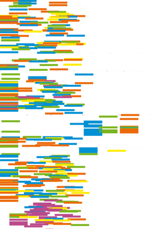
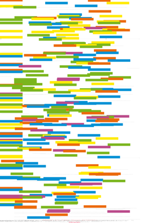
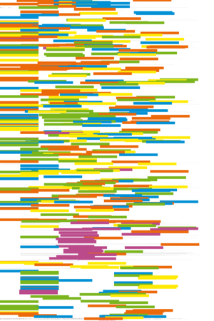

| About IR |
| Editors |
| Author instructions |
| Copyright |
| Author index |
| Subject index |
| Search |
| Reviews |
| Register |
| Home |

Volume 6 No 4 July 2001
ISSN 1368-1613
If you find Information Research useful, please sign in and we'll notify you of future issues. |
Contents
 Editorial
Editorial
Refereed Papers
Intranets in French firms: evolutions and revolutions, by Emmanuelle Vaast, Centre de recherche en Gestion (CRG), Ecole Polytechnique, Paris, France
Copyright protection in Israel: a reality of being 'pushed into the corner', by Debbie L. Rabina, Department of Information Science, Bar Ilan University, Ramat Gan, Israel.
Scholarly communication, scholarly publication and the status of emerging formats, by Leah Halliday, Department of Information Science, Loughborough University, UK
'Historical' documents
Note: these papers are from a slowly expanding archive located at http://InformationR.net/tdw/publ/papers/
Action research and users' needs. A paper delivered at the 4th International Research Forum in Information Science, Borås, Sweden, 1981, by T.D. Wilson and D.R. Streatfield
Learning at a distance and library use: Open University students and libraries, by T.D. Wilson [Ms. of a paper published in Libri, 28(4), 1978, 270-282],
Research priorities in social welfare library and information work, by T.D. Wilson [Ms. of a paper published in Journal of Libarianship, 7(4), 1975, 252-260]
Letter to the Editor
from David Boulton, learning theorist.
What's in the other free e-journals? An experimental page
Reviews
Eric S. Raymond The cathedral and the bazaar: musings on Linux and open source by an accidental revolutionary. Revised edition. Sebastopol, CA: O'Reilly, 2001.
Simplicity, usability: secrets of Web design.
- Lynda Weinman and William Weinman. Creative HTML design.2 New Riders Publishing, 2001.
- Jennifer Niederst. Learning Web design: a beginner's guide to HTML, graphics, and beyond. O'Reilly, 2001.
- Steve Krug. Don't make me think! A common sense approach to Web usability. New Riders Publishing, 2000.
- Jakob Nielsen. Designing Web usability. New Riders Publishing, 2000.
The languages of the Web
- Eric A. Meyer. CSS Pocket Reference. O'Reilly, 2001.
- Chelsea Valentine & Chris Minnick. XHTML. New Riders Publishing, 2001.
- Erik T. Ray. Learning XML. O'Reilly, 2001.
Getting tricky with the Web
- Mark Kerr, editor. Tips and tricks for Website managers. Aslib-IMI, 2001.
- Paul Blackmore. Intranets: a guide to their design, implementation and management. Aslib-IMI, 2001.
Paul Pedley. The invisible Web. London: Aslib-IMI, 2001.
Marc Van Lieshout, et al. editors. Social learning technologies. The introduction of multimedia in education. Ashgate Publishing, 2001.
Software Reviews
- Xenu Link Sleuth 1.1c. Tilman Hausherr, 2001
- askSam 4 Perry, FL: askSam Systems, 2000.
Other links
World List of Departments and Schools of Information Studies, Information Management, Information Systems, etc.
Dissertations by students of the taught Masters degrees in the Department of Information Studies, University of Sheffield, 2000.
If you find Information Research useful, please sign in and we'll notify you of future issues.
Information Research: an international electronic journal, is published four times a year by Professor Tom Wilson of the Department of Information Studies, University of Sheffield in association with | |
Nanyang Technological University, Singapore |
University of Tampere, Finland |
Pennsylvania State University, USA |
University of Vilnius, Lithuania |
Design and Editorial content © T.D. Wilson 1996-2001